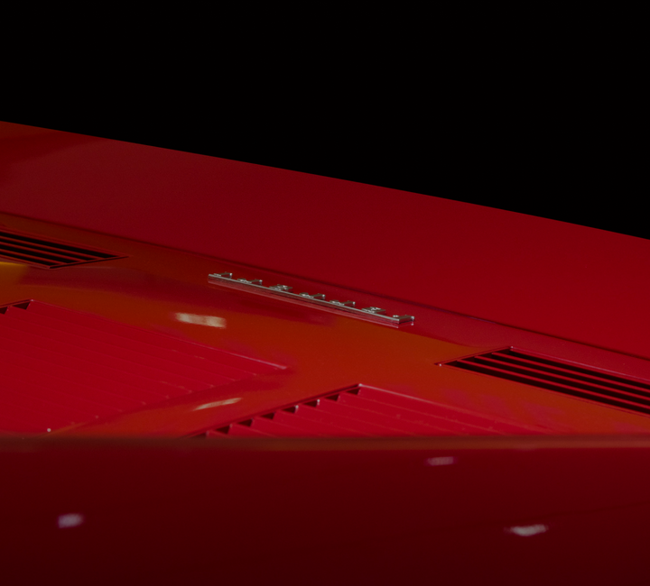
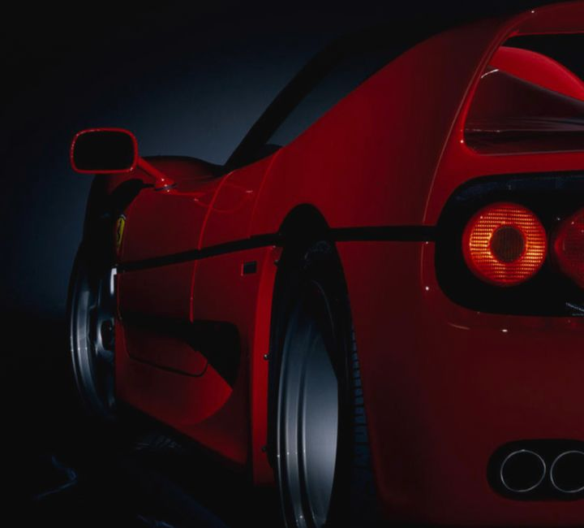

Top-level performance
The F40's performance was that of a true supercar: its claimed top speed was 324 km/h. It accelerated from 0 to 100 km/h in just 4.1 seconds, covered 0 to 400 m in 11.9 seconds, and reached 0 to 1000 m in 20.9 seconds.
The Maranello-based company's second supercar. 40 years after the first Ferrari road car. A berlinetta with racing DNA, designed by Pinifarina and constructed using composite materials.
The F40's performance was that of a true supercar: its claimed top speed was 324 km/h. It accelerated from 0 to 100 km/h in just 4.1 seconds, covered 0 to 400 m in 11.9 seconds, and reached 0 to 1000 m in 20.9 seconds.
While the cabin profile and satin black painted side indent line bore a distant resemblance to the 308, the radical body styling was all new, as were its construction materials.
The F40 was the first Ferrari production car to use mainly composite materials for its body panels, which totalled only eleven pieces due to the large single unit front and rear sections.
V8
Engine
2936.25 cc
Total displacement
351.5 kW
Maximum power @ 7000 RPM
324 km/h
Top speed
Engine
Chassis
Bodywork
Performance
Sophisticated mechanics, outstanding dynamic qualities, and Pininfarina styling. The supercar that “the Drake” called “a real Ferrari”.
F40
F40
Ferrari GTO
Discover more Ferrari F50
Discover more 